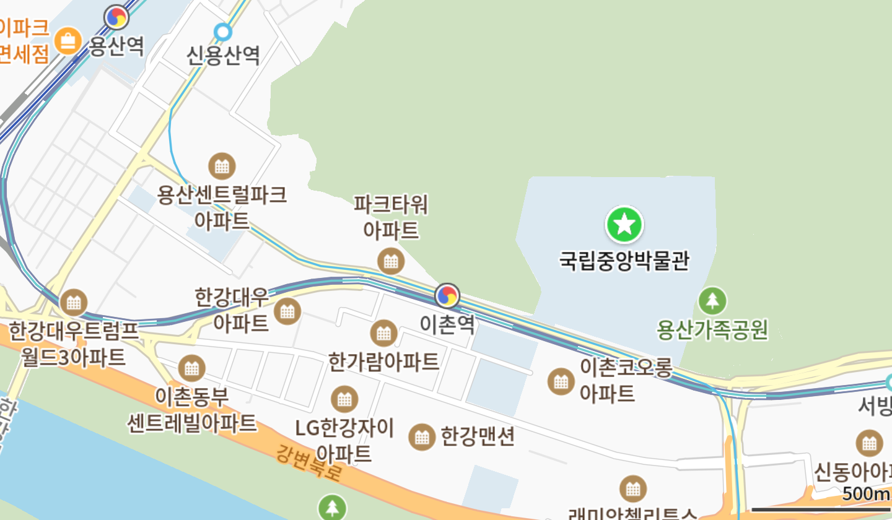

index
|
book
|
inline&block
|
display inline
|
display block
|
display inline-block
관람 안내
층별 안내
오시는 길

클릭하시면 지도로 이동합니다.
주소
서울 용산구 서빙고로 137 국립중앙박물관 (04383)
지하철
4호선, 경의중앙선 이촌역:
2번 출구에서 도보 500m
용산역(고속철도):
2번 출구에서 도보 2km
버스
서울 버스 400, 502:
국립중앙박물관 정류장에서 도보 300m